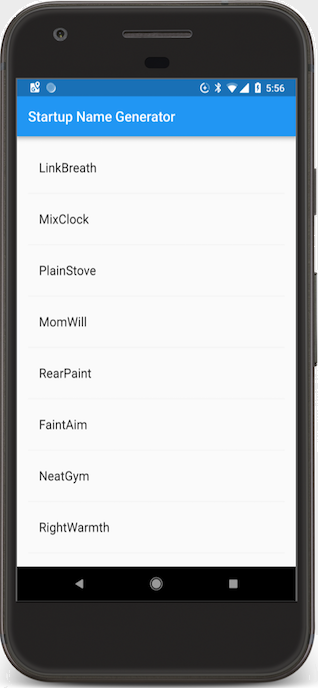
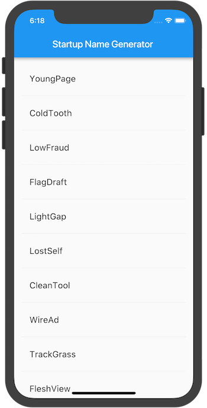

A toolkit by Google for building applications that work on mobile, web, and desktop, from a single codebase.
- You have no need of creating/maintaining separate versions of your apps for iPhones or Android devices!
- Version 1.0 was released back in December 2018 (it is currently on 1.12)
 
What sets Flutter apart?
Performance
- Compiles to native code for a platform so performance is barely impacted
- Alternative frameworks give up performance in some way (i.e. React Native uses a JavaScript bridge and Ionic uses web elements)
Hot Reload
- Changes you make to your code get pushed to the device instantly (< 1 second)
- No need to compile the program over and over, speeds up development
Structure of a Flutter program
A Flutter program is a tree of widgets. Everything is a widget in Flutter:
- Center (does it according to its parent widget)
- Text
- Row/column (laying elements left to right or top to bottom, respectively)
- Container (can wrap another widget inside it, allowing you to apply styling to it such as color)
- Much more, because you're not limited to the provided ones - you can easily download user-created widgets from the web!
A widget can be "stateless" or "stateful" depending on if you want it to update for some reason (e.g. liking a tweet)
Flutter is smart enough to only redraw widgets you want to update - it doesn't refresh the entire page, leading to high performance.